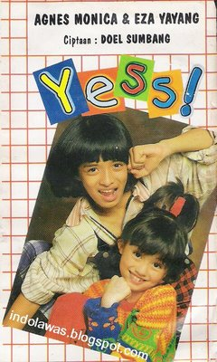

Karir

Saat menginjak usia enam tahun, Agnes memulai kariernya sebagai penyanyi cilik dan merekam album anak-anak pertamanya yang diberi judul Si Meong.
Nama Agnes melambung sebagai penyanyi cilik saat ia merilis album keduanya pada tahun 1995 yaitu Yess!, yang merupakan album duet bersama Eza Yayang.
Selain bernyanyi dan merilis album, Agnes juga menjadi presenter acara anak-anak yaitu Video Anak Anteve (VAN) di Antv, Tralala-Trilili di RCTI, dan Diva Romeo di Trans TV.
Agnes berhasil meraih penghargaan Panasonic Awards untuk "Pembawa Acara Anak-Anak Terfavorit" selama dua tahun berturut, 1999 dan 2000.
Menginjak usia remaja, Agnes mulai terjun ke dunia seni peran, dimulai dengan penampilannya di sinetron Lupus Millenia dan Mr. Hologram pada tahun 1999.
Pada tahun itu, Agnes berhasil menempati urutan pertama jajak pendapat artis beranjak remaja terbaik versi artiscilik.com.
Pada tanggal 8 Oktober 2003, Agnes merilis album dewasa pertamanya bertajuk And the Story Goes.
Penggarapan album ini melibatkan beberapa musikus kenamaan Indonesia, antaranya dan Melly Goeslaw.
Album ini kemudian meraih double platinum dengan penjualan lebih dari 300.000 keping.
Pada ajang Anugerah Musik Indonesia 2004, Agnes memenangkan tiga penghargaaan dari total sepuluh nominasi,
yaitu sebagai "Artis Pop Solo Wanita Terbaik" untuk lagu "Jera",
"Karya Produksi Dance/Tehno Terbaik" untuk lagu "Bilang Saja", serta "Duo/Group Terbaik"
untuk kolaborasinya dengan Ahmad Dhani di lagu "Cinta Mati".
Ia juga berhasil meraih penghargaan sebagai "Pendatang Baru Terbaik" pada Anugerah Planet Muzik 2004 yang digelar di Singapura.
Kesuksesannya dalam usia yang masih sangat muda membuat Agnes mendapat julukan "Diva Muda" dalam kancah musik Indonesia.
Ia juga mulai memasang target untuk bisa berkarier di kancah internasional.


Agnes resmi meluncurkan album keduanya berjudul Whaddup A'..?! pada tanggal 10 Desember 2005.
Kali ini, selain menggandeng sejumlah musikus Indonesia seperti Dewiq, Melly Geslaw, dan Andi Rianto,
Agnes juga mengajak penyanyi asal Amerika Serikat Keith Martin untuk berkolaborasi. Di album ini, Keith Martin menciptakan dua buah lagu berbahasa Inggris untuk Agnes,
termasuk di antaranya "I'll Light a Candle" yang mereka bawakan secara duet.
Pada pegelaran Anugerah Musik Indonesia 2006, Agnes menyabet dua penghargaan yakni "Artis Pop Wanita Terbaik" dan "Karya Produksi R&B Terbaik" untuk lagu "Bukan Milikmu Lagi".
Pada ajang Penghargaan MTV Indonesia 2006, Agnes kembali meraih trofi "Most Favorite Female" berkat lagu "Tak Ada Logika".
Whaddup A'..?! juga telah meraih triple platinum untuk angka penjualan album yang mencapai lebih dari 450.000 keping.
Pada tanggal 23 Juni 2007, Agnes menggelar konser tunggal untuk pertama kali di Stadium Negara, Kuala Lumpur, Malaysia, yang disaksikan sebanyak 3.000 penonton.
Agnes juga menjadi bintang tamu khusus dalam panggung final Asian Idol yang digelar pada tanggal 16 Desember 2007, dengan membawakan lagunya berjudul "Get Up".
Pada tanggal 4 Oktober 2008, Agnes dipilih untuk mewakili Indonesia di Asia Song Festival yang diselenggarakan oleh
Korea Foundation for International Culture Exchange di Seoul, Korea Selatan.
Acara yang diikuti 24 artis dari 12 negara Asia di antaranya Super Junior, Girls' Generation, 2NE1, Rain, SHINee, dan Ruslana.
Event tersebut disaksikan oleh 35.000 penonton di Seoul World Cup Stadium dan disiarkan di stasiun televisi di 30 negara termasuk Amerika Serikat,
Kanada, Inggris Raya, Jerman, Prancis, Italia, Australia dan Jepang.
Pada tanggal 1 April 2009 Agnes akhirnya resmi meluncurkan album ketiganya yang diberi judul Sacredly Agnezious.
Kali ini, Agnes lebih terlibat secara langsung dalam pengerjaan album.
Dengan dibantu sejumlah musikus ternama, yaitu Erwin Gutawa, Dewiq, Pay, dan DJ Sumantri, Agnes turut terlibat sebagai produser dan pencipta lagu dalam album tersebut.
Pada Anugerah Musik Indonesia yang digelar pada tahun berikutnya, Agnes berhasil meraih dua penghargaan, masing-masing untuk kategori "Album Pop Terbaik", "Artis Solo Pop Wanita Terbaik" dan "Album Terbaik Terbaik".


Memasuki tahun 2010, Agnes mendapat kehormatan menjadi juri dalam ajang pencarian bakat Indonesian Idol. Kehadiran Agnes di ajang tersebut sempat diragukan karena usianya yang masih terlalu muda.
Agnes berkomentar "Kalau pengalaman, jangan dilihat dari umur.
Dengan prestasi yang aku dapat, enggak ada beban buatku berada di antara Mas Anang dan Mas Erwin.
Pada tanggal 21 November 2010, Agnes terpilih menjadi pembawa acara karpet merah ajang penghargaan tahunan American Music Awards yang diselenggarakan di Nokia Theatre, Los Angeles, Amerika Serikat
yang menjadi sejarah Selebriti Indonesia dan Asia Tenggara pertama yang dipilih oleh Institusi Penghargaan Musik berpengaruh di Amerika Serikat dan Kanada tersebut.
Pada bulan September 2011, Agnes berduet dengan penyanyi senior Amerika Serikat Michael Bolton pada lagu "Said I Loved You...But I Lied". Lagu tersebut direkam sebagai lagu tambahan dalam album Bolton bertajuk Gems:
The Duets Album khusus untuk edisi Asia.
Pada tahun 2011 Agnes Mo dinominasikan sebagai "Best Asia Pacific Act" dan tahun 2014 dan 2020 "Best South-East Act" pada ajang penghargaan musik eropa MTV Europe Music Awards
dan juga menjadi nominator di Nickelodeon Kids' Choice Awards USA 2012 kategori "Favorite Asian Act".
Agnez meluncurkan Single berjudul "Patience" pada 11 Februari 2022 dengan label miliknya sendiri yaitu Entertainment Inc.,
dan Single tersebut berhasil Masuk di 2 Chart Billboard Amerika Serikat R&B/Hip-Hop Airplay dan Adult R&B Airplay dan masuk daftar penjualan lagu populer posisi nomor 1 iTunes di Indonesia, Singapore, Hong Kong, Taiwan dan Uni Emirat Arab.